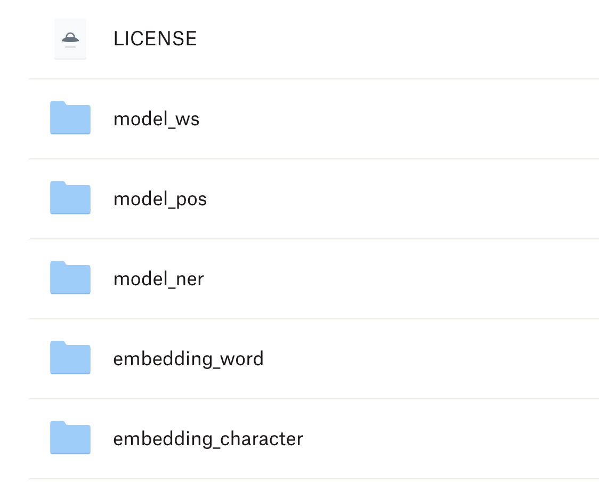

Chapter 9 CKIP Tagger
library(tidyverse)
library(reticulate)The current state-of-art Chinese segmenter for Taiwan Mandarin available is probably the CKIP tagger, created by Chinese Knowledge and Information Processing (CKIP) group at Academia Sinica.
The ckiptagger is released as a python module. In this chapter, I will demonstrate how to use the module for Chinese word segmentation but in an R environment, i.e., how to integrate Python modules in R coherently to perform complex tasks.
Alternatively, we can run python codes directly in RStudio. In that case, we don’t need to worry about the Python-to-R interface issues. If you are familiar with Python, you are encouraged to take this option and run the ckiptagger word segmentation directly with Python.
9.1 Installation
Because ckiptagger is built in python, we need to have python installed in our working environment. Please install the following applications on your own before you start:
- Anaconda + Python 3.7+
- Create a conda environment
- Install
ckiptaggermodule in the conda environment - Install
tensorflowmodule in the conda environment
For example, the following codes:
- Create a new conda environment
corpling(skip this step if you’ve already created a conda environment to be used in RStudio); - Activate the new conda environment;
- Install
ckiptaggerin the conda environment - Install
tensorflowin the conda environment
The codes for the environment setup need to be executed in the terminal.
## Codes in terminal
conda create --name corpling python=3.7
source activate corpling
pip install -U ckiptagger
pip install tensorflowCheck the versions of the Python modules:
## Codes in terminal
pip show ckiptagger
pip show tensorflowName: ckiptagger
Version: 0.2.1
Summary: Neural implementation of CKIP WS, POS, NER tools
Home-page: https://github.com/ckiplab/ckiptagger
Author: Peng-Hsuan Li
Author-email: jacobvsdanniel@gmail.com
License: GPLv3
Location: /Users/alvinchen/opt/anaconda3/envs/corpling/lib/python3.7/site-packages
Requires:
Required-by:
Name: tensorflow
Version: 2.8.0
Summary: TensorFlow is an open source machine learning framework for everyone.
Home-page: https://www.tensorflow.org/
Author: Google Inc.
Author-email: packages@tensorflow.org
License: Apache 2.0
Location: /Users/alvinchen/opt/anaconda3/envs/corpling/lib/python3.7/site-packages
Requires: libclang, google-pasta, tf-estimator-nightly, typing-extensions, six, keras, keras-preprocessing, tensorflow-io-gcs-filesystem, wrapt, astunparse, flatbuffers, numpy, opt-einsum, grpcio, termcolor, tensorboard, setuptools, gast, absl-py, protobuf, h5py
Required-by: Please consult the github of the ckiptagger for more details on installation.
9.2 Download the Model Files
All NLP applications have their models behind their fancy performances. To use the tagger provided in ckiptagger, we need to download their pre-trained model files.
Please go to the github of CKIP tagger to download the model files, which is provided as a zipped file. (The file is very big. It takes a while.)
After you download the zipped file, unzip it under your working directory to the data/ directory.
In the unzipped directory, data/, are the required model files for the ckiptagger.

9.3 R-Python Communication
In order to call Python functions in R/Rstudio, we need to install an R library in your R. The R-Python communication is made possible through the R library reticulate. Please make sure that you have this library installed in your R.
install.packages("reticulate")9.4 Environment Checking
Before we proceed, please check if you have everything ready. The following includes the versions of the modules used for this session:
- Anaconda + Python 3.7+ (
Python 3.7.13) - A working conda environment (
corpling) - Python modules:
ckiptagger(ckiptagger 0.2.1+tensorflow 2.8.0) - R library:
reticulate(1.24) - CKIP model files under your working directory
./data
If yes, then we are ready to go.
9.5 Initialization
We first load the library reticulate and specify in R which Python we will be using in the current R session using path_to_python() (It is highly likely that there is more than one Python environment in your system). Please change the path_to_python() to the target Python kernel, i.e., the conda environment you would like to use in R.
library(reticulate)There are three important steps in initialization before you can perform word segmentation in R:
- Activate a specific conda environment in R
- Import the
ckiptaggermodule in R - Initialize the tagger models
## Activate a specific conda env in R
use_condaenv("corpling")
## Import ckiptagger module
ckip <- reticulate::import(module = "ckiptagger")
## Initialize model for word segmentation
ws <- ckip$WS("./data")9.6 Segmenting Texts
The initialized word segmenter object, ws(), can tokenize any input text-based vectors into a list of word-based vectors of the same size.
## Raw text corpus
texts <- c("傅達仁今將執行安樂死，卻突然爆出自己20年前遭緯來體育台封殺，他不懂自己哪裡得罪到電視台。",
"美國參議院針對今天總統布什所提名的勞工部長趙小蘭展開認可聽證會，預料她將會很順利通過參議院支持，成為該國有史以來第一位的華裔女性內閣成員。",
"土地公有政策?？還是土地婆有政策。.",
"… 你確定嗎… 不要再騙了……他來亂的啦",
"最多容納59,000個人,或5.9萬人,再多就不行了.這是環評的結論.",
"科長說:1,坪數對人數為1:3。2,可以再增加。")
words <- ws(texts)
words[[1]]
[1] "傅達仁" "今" "將" "執行" "安樂死" "，" "卻" "突然"
[9] "爆出" "自己" "20" "年" "前" "遭" "緯來" "體育台"
[17] "封殺" "，" "他" "不" "懂" "自己" "哪裡" "得罪到"
[25] "電視台" "。"
[[2]]
[1] "美國" "參議院" "針對" "今天" "總統" "布什"
[7] "所" "提名" "的" "勞工部長" "趙小蘭" "展開"
[13] "認可" "聽證會" "，" "預料" "她" "將"
[19] "會" "很" "順利" "通過" "參議院" "支持"
[25] "，" "成為" "該" "國" "有史以來" "第一"
[31] "位" "的" "華裔" "女性" "內閣" "成員"
[37] "。"
[[3]]
[1] "土地公" "有" "政策" "?" "？" "還是" "土地" "婆"
[9] "有" "政策" "。" "."
[[4]]
[1] "…" " " "你" "確定" "嗎" "…" " " "不要" "再" "騙"
[11] "了" "…" "…" "他" "來" "亂" "的" "啦"
[[5]]
[1] "最多" "容納" "59,000" "個" "人" "," "或" "5.9萬"
[9] "人" "," "再" "多" "就" "不行" "了" "."
[17] "這" "是" "環評" "的" "結論" "."
[[6]]
[1] "科長" "說" ":1," "坪數" "對" "人數" "為" "1:3" "。" "2"
[11] "," "可以" "再" "增加" "。" The word segmenter ws() returns a list object, each element of which is a word-based vector of the original text.
9.7 Define Own Dictionary
The performance of Chinese word segmenter depends highly on the dictionary. Texts in different disciplines may have very domain-specific vocabulary. To prioritize a set of words in a dictionary, we can further ensure the accuracy of the word segmentation. To create a dictionary for ckiptagger, we need to:
- Create a named list, i.e., a
listwith each element’s name = “the new word” and element’s value = “the weight”. - Use the python function
ckip$construct_dictionary()to create thedictionaryPython object - Use the dictionary object as the argument for the parameter
recommend_dictionary = ...in word segmenter, i.e.,ws(..., recommend_dictionary = ...).
## Define new words in own dictionary
## To create a dictionary for `construct_dictionary()`
## We need a list,
## consisting of pairs of `names` = `weights` in the dictionary
new_words <- list("土地公有" = 2,
"土地公"=1,
"土地婆"=1,
"來亂的"=1,
"啦"=1,
"緯來體育台"=1)
## Create Python `dictionary` object, required by `ckiptagger.wc()`
dictionary<-ckip$construct_dictionary(new_words)
## Segment texts using dictionary
words_1 <- ws(texts, recommend_dictionary = dictionary)
words_1[[1]]
[1] "傅達仁" "今" "將" "執行" "安樂死"
[6] "，" "卻" "突然" "爆出" "自己"
[11] "20" "年" "前" "遭" "緯來體育台"
[16] "封殺" "，" "他" "不" "懂"
[21] "自己" "哪裡" "得罪到" "電視台" "。"
[[2]]
[1] "美國" "參議院" "針對" "今天" "總統" "布什"
[7] "所" "提名" "的" "勞工部長" "趙小蘭" "展開"
[13] "認可" "聽證會" "，" "預料" "她" "將"
[19] "會" "很" "順利" "通過" "參議院" "支持"
[25] "，" "成為" "該" "國" "有史以來" "第一"
[31] "位" "的" "華裔" "女性" "內閣" "成員"
[37] "。"
[[3]]
[1] "土地公有" "政策" "?" "？" "還是" "土地婆"
[7] "有" "政策" "。" "."
[[4]]
[1] "…" " " "你" "確定" "嗎" "…" " " "不要"
[9] "再" "騙" "了" "…" "…" "他" "來亂的" "啦"
[[5]]
[1] "最多" "容納" "59,000" "個" "人" "," "或" "5.9萬"
[9] "人" "," "再" "多" "就" "不行" "了" "."
[17] "這" "是" "環評" "的" "結論" "."
[[6]]
[1] "科長" "說" ":1," "坪數" "對" "人數" "為" "1:3" "。" "2"
[11] "," "可以" "再" "增加" "。" demo_data/dict-sample.txt into a named list, i.e., new_words, which can easily serve as the input for ckip$construct_dictionary() to create the python dictionary object? (Note: All weights are default to 1)
## Load external file as dictionary
new_words<-loadDictionary(input = "demo_data/dict-sample.txt")
dictionary<-ckip$construct_dictionary(new_words)
## Segment texts using dictionary
words_2 <- ws(texts, recommend_dictionary = dictionary)
words_2[[1]]
[1] "傅達仁" "今" "將" "執行" "安樂死"
[6] "，" "卻" "突然" "爆出" "自己"
[11] "20" "年" "前" "遭" "緯來體育台"
[16] "封殺" "，" "他" "不" "懂"
[21] "自己" "哪裡" "得罪到" "電視台" "。"
[[2]]
[1] "美國" "參議院" "針對" "今天" "總統" "布什"
[7] "所" "提名" "的" "勞工部長" "趙小蘭" "展開"
[13] "認可" "聽證會" "，" "預料" "她" "將"
[19] "會" "很" "順利" "通過" "參議院" "支持"
[25] "，" "成為" "該" "國" "有史以來" "第一"
[31] "位" "的" "華裔" "女性" "內閣" "成員"
[37] "。"
[[3]]
[1] "土地公有" "政策" "?" "？" "還是" "土地婆"
[7] "有" "政策" "。" "."
[[4]]
[1] "…" " " "你" "確定" "嗎" "…" " " "不要"
[9] "再" "騙" "了" "…" "…" "他" "來亂的" "啦"
[[5]]
[1] "最多" "容納" "59,000" "個" "人" "," "或" "5.9萬"
[9] "人" "," "再" "多" "就" "不行" "了" "."
[17] "這" "是" "環評" "的" "結論" "."
[[6]]
[1] "科長" "說" ":1," "坪數" "對" "人數" "為" "1:3" "。" "2"
[11] "," "可以" "再" "增加" "。" Exercise 9.2 Use the ckiptagger word segmentation method to tokenize the text we discuss in Chapter 7 (as repeated below). Please use the tidytext to process the data, tokenize the data with unnest_tokens() and present the results as follows. Please include the following words in the user-defined dictionary: 被提名人, 年終獎金, 受訪, 不分區.
Also, compare the results based on jiebar in Chapter 7 and ckiptagger and discuss their respective strengths and weaknesses.
text <- "綠黨桃園市議員王浩宇爆料，指民眾黨不分區被提名人蔡壁如、黃瀞瑩，在昨（6）日才請辭是為領年終獎金。台灣民眾黨主席、台北市長柯文哲7日受訪時則說，都是按流程走，不要把人家想得這麼壞。"[[1]]
[1] "綠黨" "桃園" "市議員" "王浩宇" "爆料" "，"
[7] "指" "民眾黨" "不分區" "被提名人" "蔡壁如" "、"
[13] "黃瀞瑩" "，" "在" "昨" "（6）" "日"
[19] "才" "請辭" "是" "為" "領" "年終獎金"
[25] "。" "台灣" "民眾" "黨主席" "、" "台北市長"
[31] "柯文哲" "7日" "受訪" "時" "則" "說"
[37] "，" "都" "是" "按" "流程" "走"
[43] "，" "不要" "把" "人家" "想" "得"
[49] "這麼" "壞" "。" 9.8 Beyond Word Boundaries
In addition to primitive word segmentation, the ckiptagger provides also the parts-of-speech tags for words and named entity recognitions for the texts. The ckiptagger follows the pipeline below for text processing.
Load the models
To perform these additional tasks, we need to load the necessary models (pre-trained and provided by the CKIP group) first as well.
They should all have been included in the model directory you unzipped earlier (cf. ./data).
## Loading pretrained CKIP models
system.time((pos <- ckip$POS("./data"))) ## POS Tagging Model
user system elapsed
3.647 2.705 6.718
system.time((ner <- ckip$NER("./data"))) ## Named Entity Recognition Model
user system elapsed
3.830 2.433 6.671 POS tagging and NER
# Parts-of-speech Tagging
pos_words <- pos(words_1)
pos_words[[1]]
[1] "Nb" "Nd" "D" "VC"
[5] "Na" "COMMACATEGORY" "D" "D"
[9] "VJ" "Nh" "Neu" "Nf"
[13] "Ng" "P" "Nc" "VC"
[17] "COMMACATEGORY" "Nh" "D" "VK"
[21] "Nh" "Ncd" "VJ" "Nc"
[25] "PERIODCATEGORY"
[[2]]
[1] "Nc" "Nc" "P" "Nd"
[5] "Na" "Nb" "D" "VC"
[9] "DE" "Na" "Nb" "VC"
[13] "VC" "Na" "COMMACATEGORY" "VE"
[17] "Nh" "D" "D" "Dfa"
[21] "VH" "VC" "Nc" "VC"
[25] "COMMACATEGORY" "VG" "Nes" "Nc"
[29] "D" "Neu" "Nf" "DE"
[33] "Na" "Na" "Na" "Na"
[37] "PERIODCATEGORY"
[[3]]
[1] "VH" "Na" "QUESTIONCATEGORY" "QUESTIONCATEGORY"
[5] "Caa" "Nb" "V_2" "Na"
[9] "PERIODCATEGORY" "PERIODCATEGORY"
[[4]]
[1] "ETCCATEGORY" "WHITESPACE" "Nh" "VK" "T"
[6] "ETCCATEGORY" "WHITESPACE" "D" "D" "VC"
[11] "Di" "ETCCATEGORY" "ETCCATEGORY" "Nh" "VA"
[16] "T"
[[5]]
[1] "VH" "VJ" "Neu" "Nf"
[5] "Na" "COMMACATEGORY" "Caa" "Neu"
[9] "Na" "COMMACATEGORY" "D" "D"
[13] "D" "VH" "T" "PERIODCATEGORY"
[17] "Nep" "SHI" "Na" "DE"
[21] "Na" "PERIODCATEGORY"
[[6]]
[1] "Na" "VE" "Neu" "Na"
[5] "P" "Na" "VG" "Neu"
[9] "PERIODCATEGORY" "Neu" "COMMACATEGORY" "D"
[13] "D" "VHC" "PERIODCATEGORY"# Named Entity Recognition
entities <- ner(words_1, pos_words)
entities[[1]]
{(18, 22, 'DATE', '20年前'), (23, 28, 'ORG', '緯來體育台'), (0, 3, 'PERSON', '傅達仁')}
[[2]]
{(11, 13, 'PERSON', '布什'), (21, 24, 'PERSON', '趙小蘭'), (60, 62, 'NORP', '華裔'), (7, 9, 'DATE', '今天'), (0, 2, 'GPE', '美國'), (56, 58, 'ORDINAL', '第一'), (2, 5, 'ORG', '參議院'), (17, 21, 'ORG', '勞工部長'), (42, 45, 'ORG', '參議院')}
[[3]]
{(10, 13, 'PERSON', '土地婆')}
[[4]]
set()
[[5]]
{(14, 18, 'CARDINAL', '5.9萬'), (4, 10, 'CARDINAL', '59,000')}
[[6]]
{(14, 15, 'CARDINAL', '3'), (16, 17, 'CARDINAL', '2'), (12, 13, 'CARDINAL', '1'), (4, 6, 'CARDINAL', '1,')}Exercise 9.3 Use the same texts in the above example and the same word tokenization method (i.e., ckiptagger), but please process the Chinese texts using the tidytext framework.
That is, use the ckiptagger tokenization method along with the unnest_tokens() and present your token-based information of the corpus as shown below. Your results should include word tokens, their POS tags, and the start and end indices of each word token.
Use the user-defined dictionary demo_data/dict-sample.txt in your word segmentation.
Exercise 9.4 With a word-based tidy structure of the corpus, it is easy to convert it into a text-based one with both the information of word boundaries and parts-of-speech tag.
Please convert the word-based data frame into a text-based data frame, as shown below. Please note that thetext column includes an enriched version of the original texts.
ner() are not very R friendly. How to tidy up the output of ner() by converting it into a more R-compatible data frame?
- For example, convert the output of
ner()from ckiptagger into a data frame like this:
Exercise 9.6 Add the named entity annotations to the word-based data frame obtained in the previous exercise. That is, under the tity text framework, parse the corpus data texts by tokenizing the text-based data frame into a word-based data frame, with the following annotations provided for each word:
text_id: text IDword_id: word IDstart: starting character indexend: ending character indexword: wordtag: CKIP POS tagentity: CKIP Named Entity Tag
The above result data frame makes use of the I(O)B format (short for inside, outside, beginning) for the annotations of the named entities.
It is a common tagging format for tagging (multiword) tokens in a chunking task in computational linguistics (e.g., NP-chunking, named entitity, semantic roles).
-
The
_Bsuffix after a tag indicates that the tag is the beginning of a chunk. -
The
_Isuffix after a tag indicates that the tag is inside a chunk. Some annotation scheme (we don’t have this in our above example) may have a third suffix: -
The
_Otag indicates that a token belongs to no chunk (i.e., outside of all relevant chunks).